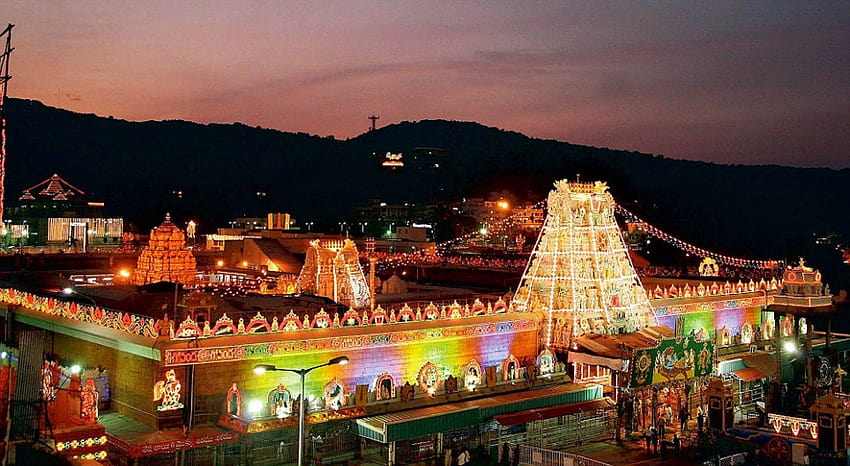

SUPRIYA
Welcome to my blog!
I'm Supriya, and this blog is like a cozy corner where I share things I love.I'm probably snapping pics or exploring new hobbies. Come along for the ride, and let's make this space a fun and inspiring hangout!
About Me
I'm Supriya, an ambitious individual, finds my passion in contributing to a dynamic work environment within a reputable company with a background rooted in determination.Not only a skilled person but also a good problem-solver.My commitment is to continuous learning and adaptability makes me valuable asset in corporate world. Through my blog, I aims to share insights, experiences, and inspiring others to pursue their professional goals with courage.
Recent post
Trip to Tirumala
{kind=link}
Education Qualifications
I'm pursuing Btech III yr in the field of CSEAIML in Mallareddy college of Engineering and Technology
I have completed my intermediate from Prathiba Junior college
I have completed my schooling from Apex Central School
Technical Skills

JAVA

PYTHON
Projects
Air Canvas using openCV
Travel Itinerary Suggestion
Software Automation
Contact Me
Email: rampuramsupriyareddy@gmail.comInstagram:supriya_reddy2108